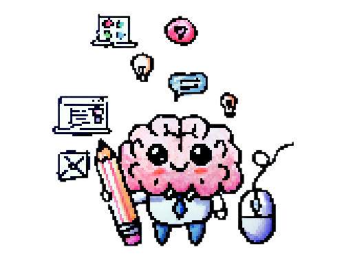
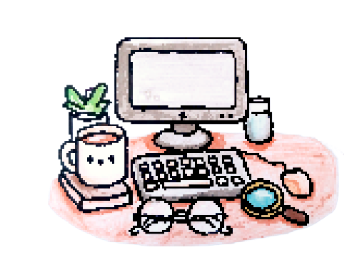
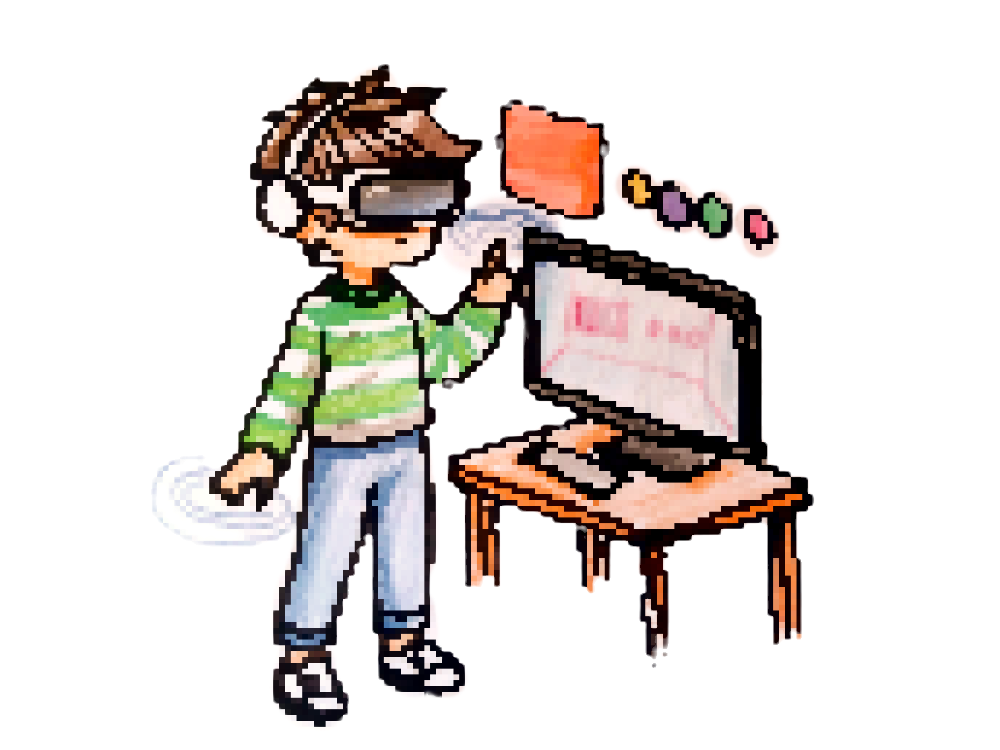
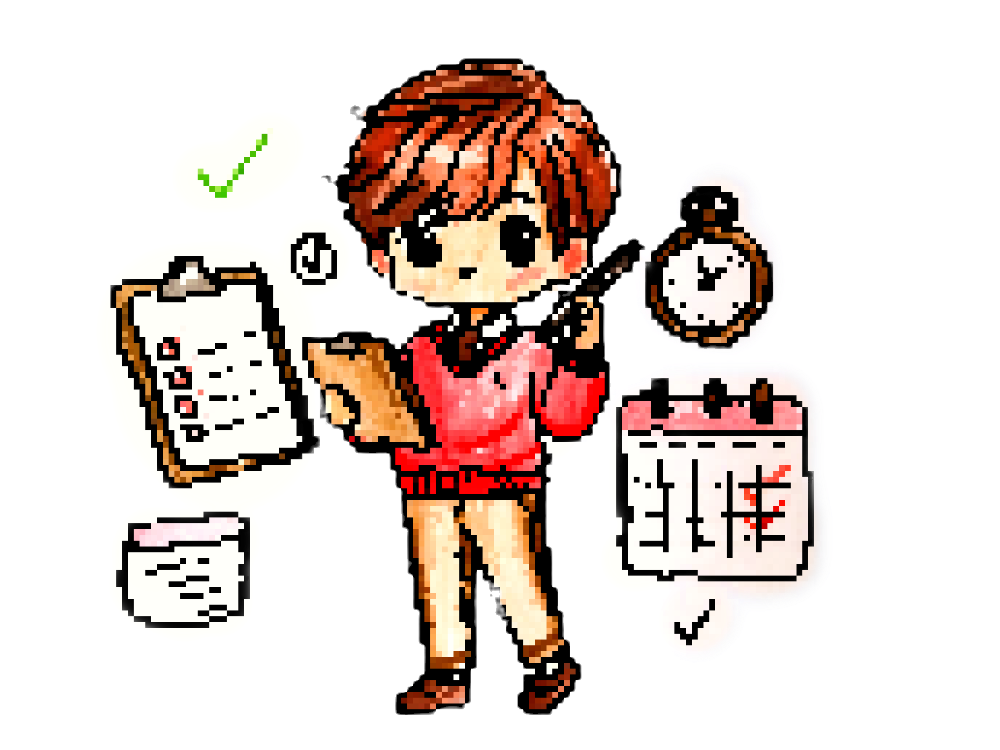

← Back to Highlights
Behind the Tech : My Role(s) at Huawei
Human-Machine Interaction Tech Planning Specialist
Human-Machine Interaction Tech Planning Specialist
Due to the NDA, I can't share all the exciting details about my projects. But don't worry! :) I've put together this fun little visual walkthrough of my experiences and the various roles I've taken on. All images were hand-drawn by me and then translated into pixel art. Enjoy!
Here are the various hats I wore as a Human-Machine Interaction Tech Planning Specialist:
I didn't just invent new interaction methods and technologies; I also envisioned how people would use them in the future. Alongside thorough research, I used my drawing skills to create user scenarios and information architecture, finding ways to integrate them with the hardware ecosystem. My fun drawings effectively communicated my ideas to colleagues from different backgrounds, bridging gaps and bringing innovative concepts to life.

In the beginning, my main responsibilities included identifying top collaborators from leading companies and renowned professors and establishing important connections with them. I collected and provided weekly business intelligence, keeping up with the latest advanced technologies. I also monitored market trends for different technologies, conducted competitive analyses, and reviewed patents to ensure that our strategies remained ahead of the competition. This mix of investigative work and strategic insight played a crucial role in driving innovation and maintaining our competitive advantage.

I conducted advanced simulations, including Finite Element Method (FEM) simulations, and performed quantitative analysis of the latest technologies (details of which are confidential). Additionally, I tested interactive prototypes incorporating various AR/VR hardware and software. I had the exciting opportunity to tinker with and analyze groundbreaking technologies, creating engaging demos with Unreal Engine 5 to showcase to stakeholders. These demos explored multimodal interactions, pushing the boundaries of traditional graphical user interface design by catering to different sensory modalities.

I was one of the lead organizers of the Huawei Aurora Summit 2022, a three-day event in Levi, Finland, which brought together professors and industry professionals in the field of haptics. I played a central role in all aspects of the event, from graphic design and preparing marketing materials to handling flight tickets and communications. The event was a resounding success, praised by many Huawei managers, and it fostered strong partnerships and led to four subsequent collaborations.
